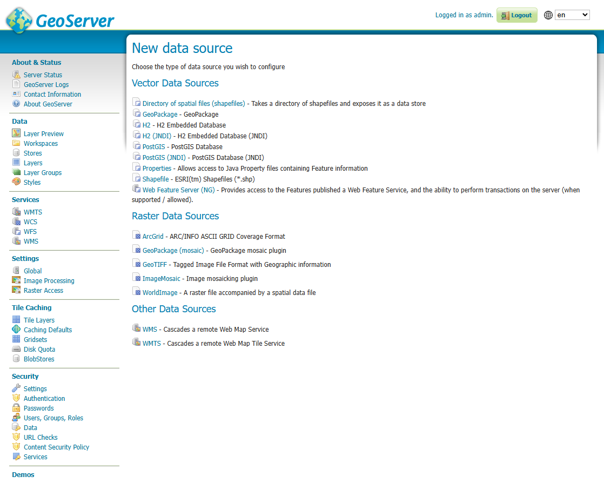
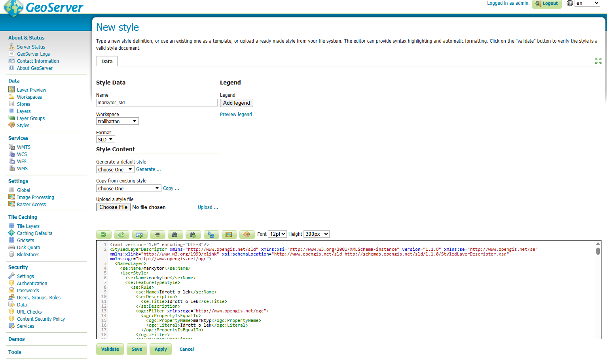
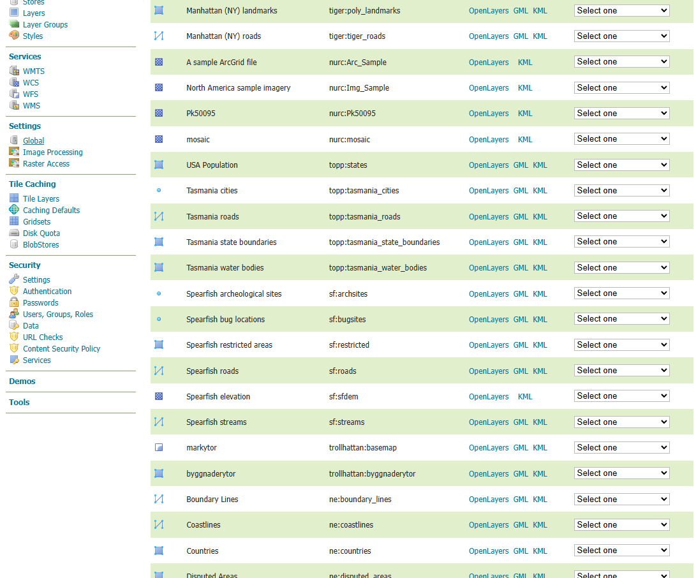

I detta steg publiceras data som lagrats i PostGIS så att de kan användas av webbkartor (OpenLayers) eller andra GIS-klienter. GeoServer är en öppen källkodsserver specialiserad på OGC-standarder såsom WMS (Web Map Service) och WFS (Web Feature Service).
Vad jag gjort i detta projekt
- Skapat en PostGIS-datastore och kopplat GeoServer till databasen.
- Publicerat lager som WMS och WFS.
- Använt SLD-filer (skapade i QGIS) för styling av kartlager.
- Konfigurerat workspace, namespace och kartinställningar.
Se bild nedan som visar hur anslutningen till PostGIS ser ut:

Ett av de stora styrkorna med GeoServer är att det går att använda samma stilar som du skapat i QGIS. I QGIS exporterar du enkelt en stil som .sld och laddar sedan upp den i GeoServer.
Steg för steg:
- Skapa och finjustera din styling i QGIS.
- Högerklicka på lagret → Exportera → Spara som SLD.
- Gå till GeoServer → Styles → Add a New Style.
- Välj Upload SLD file och ladda upp filen du exporterade från QGIS.
- Spara och tillämpa stilen på valfritt lager.

Här är ytterligare en bild som visar publicerade lager:

GeoServer fungerar som navet mellan PostGIS och OpenLayers och gör det möjligt att visa dina kartlager i webben utan att behöva lagra stora filer lokalt.